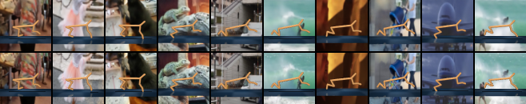
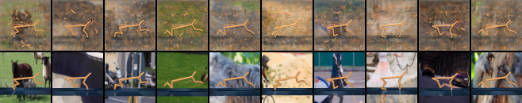
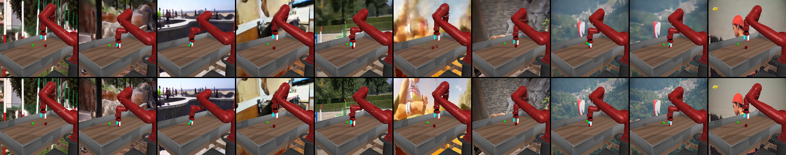
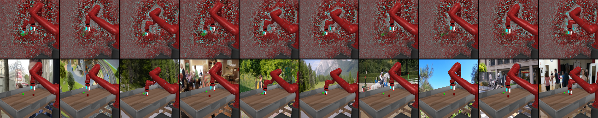
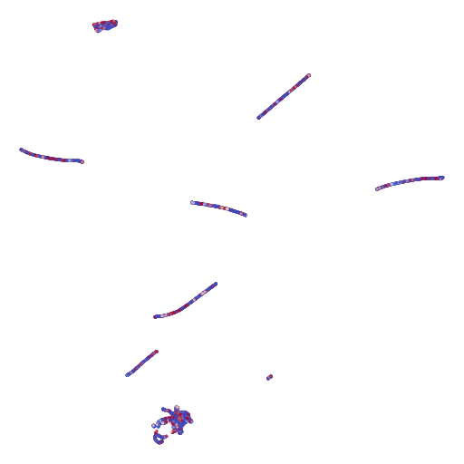
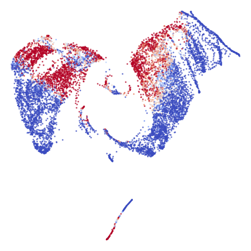
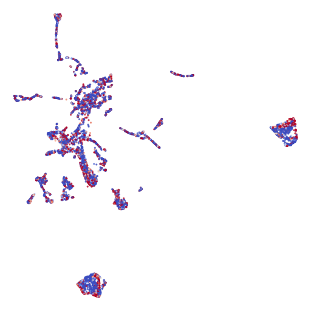
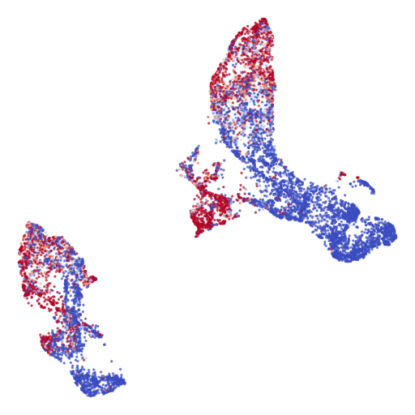
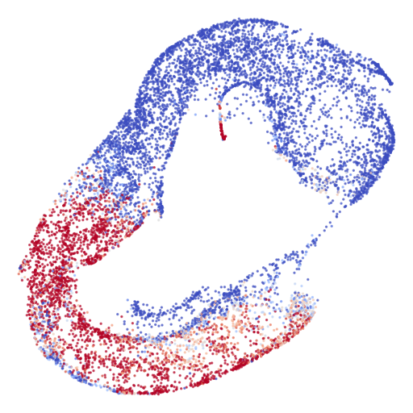
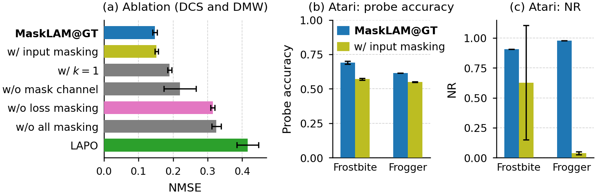

TL;DR
Under action-correlated visual distractors, the next-frame reconstruction objective of latent action models (LAMs) forces the latent action to encode exogenous dynamics. Since endogenous and exogenous factors are largely spatially separable in pixel space, MaskLAM restricts the forward-dynamics loss to agent pixels using zero-shot segmentation masks (SAM), while the inverse and forward dynamics models retain the full observation as input. Without action labels or architectural changes, this yields more action-aligned latents on the Distracting Control Suite, Distracting Meta-World, and real robot video (DROID).
Background and Problem Formulation
LAPO infers a latent action \(z_t\) with an inverse dynamics model (IDM) and trains it by reconstructing the next observation with a forward dynamics model (FDM). Whatever in \(o_{t+1}\) cannot be predicted from \(o_t\) has to pass through \(z_t\). In the Exogenous Block MDP view (Efroni et al., 2022), each observation \(o_t \sim Q(\cdot \mid s_t, e_t)\) is generated from an endogenous state \(s_t\), driven by the agent's actions, and an exogenous state \(e_t\), which evolves independently of them. Without distractors, \(e_t\) barely changes, and the unpredictable part of the transition is the endogenous one, \(s_t \to s_{t+1}\). With visual distractors such as dynamic backgrounds, camera motion, or other moving objects, it also contains the exogenous transition \(e_t \to e_{t+1}\), and the latent encodes whichever varies most (Zhang et al., 2025). The FDM predictions below make this visible: LAPO reconstructs the distractors at pixel level, which requires \(z_t\) to encode \(e_{t+1}\). MaskLAM's FDM receives no gradient from exogenous pixels and leaves them blurry, so \(z_t\) has no reason to encode them.
bottom: target

bottom: target

bottom: target

bottom: target

Forward-model predictions \(\hat{o}_{t+1}\) (top row of each pair) against the true next frame \(o_{t+1}\) (bottom row) for ten training transitions. LAPO's predictions match the target down to the last pixel. MaskLAM's FDM receives no gradient outside \(M_{t+1}\) and stops modeling those pixels.
Method: Masked Forward Dynamics Loss
The endogenous transition \(s_t \to s_{t+1}\) is visible mainly on the agent's pixels, while the exogenous transition \(e_t \to e_{t+1}\) mostly changes other pixels. Prior work separates the two inside the model, with action supervision, object slots, or auxiliary flow losses. MaskLAM separates them in the prediction target instead. Given an agent mask \(M_{t+1}\) from SAM, the forward-dynamics loss becomes
Where \(M_{t+1} = 0\), the residual is zeroed before it propagates into \(z_t\), so encoding the exogenous transition \(e_t \to e_{t+1}\) can no longer lower the loss. The architecture and the rest of the LAPO pipeline stay unchanged.
Loss Masking versus Input Masking
Masking the input instead, i.e., feeding \(M_t \odot o_t\) to both models as object-centric LAMs do, also excludes exogenous pixels, but it hides the endogenous context outside the mask as well. We write the endogenous state as \(s_t = (s_t^{\text{agent}}, s_t^{\text{ctx}})\), where \(s_t^{\text{ctx}}\) is the context relevant to the agent's action, such as the surface it stands on or the object it manipulates. With input masking, the IDM observes only the agent transition \(X_t = (s_t^{\text{agent}}, s_{t+1}^{\text{agent}})\); with loss masking, it additionally observes the context transition \(C_t = (s_t^{\text{ctx}}, s_{t+1}^{\text{ctx}})\). For the Bayes-optimal inverse dynamics predictor, context can only help:
In Frogger, the frog's displacement is the sum of its action and the drift of the log it sits on, which belongs to \(s_t^{\text{ctx}}\). An IDM that cannot observe \(C_t\) has to absorb the drift into \(z_t\). Loss masking keeps \(C_t\) observable and still removes every pixel outside \(M_{t+1}\) from the target.
Latent Action Quality and Downstream Performance
Latent action quality is measured by the normalized error (NMSE) of a linear probe that maps frozen latent actions \(z_t\) to ground-truth actions \(a_t\); downstream quality by the normalized return (NR) or success rate (NSR) of the final policy.
| Method | Distracting Control Suite | Distracting Meta-World | DROID (real) | ||
|---|---|---|---|---|---|
| NMSE ↓ | NR ↑ | NMSE ↓ | NSR ↑ | NMSE ↓ | |
| LAPO | 0.511±.034 | 0.076±.009 | 0.309±.009 | 0.636±.015 | 0.848±.007 |
| LAOM-Labels (uses GT actions) | 0.216±.003 | 0.566±.019 | 0.142±.008 | 0.781±.033 | 0.882±.003 |
| LAOF | 0.506±.019 | 0.094±.020 | 0.453±.057 | 0.577±.079 | 0.848±.005 |
| LAPO-Slots | 0.657±.029 | 0.045±.008 | 0.245±.048 | 0.827±.023 | 0.854±.008 |
| MaskLAM@GT | 0.206±.009 | 0.378±.030 | 0.088±.004 | 0.843±.021 | n/a |
| MaskLAM@SAM | 0.233±.037 | 0.358±.040 | 0.090±.005 | 0.832±.031 | 0.798±.006 |
Latent action quality and downstream performance, aggregated over tasks. Bold marks the best value per column; teal rows are ours. LAOM-Labels trains with 128k ground-truth action labels during pre-training (65.5k on DROID) and serves as a privileged reference. DROID has no simulator masks and is evaluated offline, so only probe error is reported. A supervised IDM reaches an NMSE of 0.684 on DROID.
MaskLAM has the lowest probe error on both simulated benchmarks, below LAOM-Labels, which trains with ground-truth actions. Zero-shot SAM masks perform within noise of simulator masks. The gains carry over to control: normalized return on DCS rises from 0.08 to 0.38, and MaskLAM has the highest success rate on DMW. On real robot video (DROID), it is the only method that improves over LAPO.
Structure of the Latent Action Space





UMAP of latent actions \(z_t\) on cheetah-run with distractors, colored by the fourth dimension of the ground-truth action \(a_t\) (red: +1, blue: −1). A latent space aligned with the action shows a smooth color gradient along the projection. LAPO and LAOF collapse into disconnected clusters with no clear correspondence to \(a_t\). MaskLAM forms a single manifold along which the action varies monotonically, without the action supervision that LAOM-Labels uses.
Saliency of the Inverse Dynamics Model
Eigen-CAM shows which pixels drive the IDM's latent action \(z_t\). LAPO's saliency follows the exogenous distractor. MaskLAM's saliency covers the agent and extends beyond \(M_{t+1}\) to the ground the agent pushes against. No loss term points to these pixels; the IDM learns to attend to the endogenous context \(s_t^{\text{ctx}}\) because it explains the agent's transition.
Eigen-CAM saliency of the IDM on held-out distractor episodes. Left: input frames. Middle and right: saliency for LAPO and MaskLAM, warmer colors meaning more influence on \(z_t\). Use the arrows to switch between the four DCS and ten DMW tasks.
Endogenous Context outside the Agent Mask
In Frostbite and Frogger, the agent's transition depends on \(s_t^{\text{ctx}}\): ice floes, logs, and turtles carry the agent. MaskLAM's IDM attends to this context as well as to the agent.
Saliency beyond the agent mask in Frostbite (100 s) and Frogger (50 s), 10 fps. The mask \(M_t\) covers only the player sprite. Saliency on Frogger's cars comes from a rendering artifact: they flicker in sync with the frog when they share its lane.
Ablation Study

Removing the masked loss more than doubles probe error, so it accounts for most of the gain (a). On DCS and DMW, the agents are mostly self-actuated, \(I(a_t; C_t \mid X_t) \approx 0\), and input masking performs as well as loss masking. On Frostbite and Frogger, where \(C_t\) is informative about \(a_t\), it does not: loss masking raises normalized return from 0.33 to 0.94, and the input-masked Frogger policy collapses to 0.04 (b, c).
Additional Analyses
Action-Label Budget
MaskLAM's latent actions need far fewer action labels than LAPO's to train a decoder with strong downstream performance.
Robustness to Segmentation Errors
Performance degrades gracefully under agent occlusion and imprecise mask boundaries, so pixel-perfect segmentation is not required.
Stronger Distractors
MaskLAM remains effective under stronger distractors and when evaluated under distractors stronger than those seen in training.
One Model, Many Embodiments
A single MaskLAM trained across mixed embodiment data with different action spaces matches embodiment-specific LAM models, and policies for each embodiment can be fine-tuned from its latent actions.
BibTeX
@misc{fechner2026segmentfocusguidinglatent,
title={Segment to Focus: Guiding Latent Action Models in the Presence of Distractors},
author={Marcus Fechner and Hamza Adnan and Constantin C. Lüth and Matthew T. Jackson and Alexey Zakharov and J. Marius Zöllner},
year={2026},
eprint={2602.02259},
archivePrefix={arXiv},
primaryClass={cs.LG},
url={https://arxiv.org/abs/2602.02259},
}